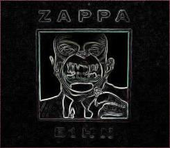
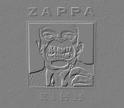
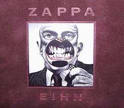

Заппа'zУх!Ой!
русский более или менее регулярный бюллетень для поклонников американского композитора
Frank'а Vincent'а Zappa'ы
Выпуск.21 (15 февраля 2000)
Вышел месяц из тумана
|
 Не ждали? А никто не ждал!Звона бубенцов за околицей не было, тройка прибыла без всякого предупреждения, как повестка из военкомата В стране Америке это называется out of the blue. Что это в переводе на наши лыжи? Обещанного три года ждут. Я не шучу. Ждут. Набирают с монотонностью паука поисковой системы альтависта бесплатный информационный номер Zappa Family Trust - 818-PUMPKIN. То бурчит что-то в трубке неразборчиво, то хрустит нечленораздельно, а тут буквально накануне Рождества - никакой химии и резонанса - чистый и ласковый голос предлагает: - Пластиночку, сэр, к праздничку заказать не желаете? Конечно! Еще бы! Как же! Только у меня уже все есть. Нет, отвечают с обезоруживающей нежностью, этой, мистер, никак быть не должно, потому что мы ее, того, только, хе-хе, вчера напечатали. Ага, помните, в 1997 обещали, а вот вчерась после ужина руки дошли. Конкретно тиснули. Телевизер сломался, ну, мы и настряпали блинов, чисса, шоб вечер не пропадал. |
Да, друзья, событие о неизбежности которого Спенсер Крислу, со
свойственной звукоинженерам цифровой эпохи определенностью и
однозначностью,
предупреждал еще в прошлом, двадцатом веке
бронепоездов и броневиков, совершилось.
Новый альбом Фрэнка Заппы с крепостью - сто процентов нового материала
издан. Танцуют все.
| 1. | Library Card | 7:42 |
| 2. | This Is A Test | 1:35 |
| 3. | Jolly Good Fellow | 4:34 |
| 4. | Roland's Big Event / Strat Vindaloo | 5:56 |
| 5. | Master Ringo | 3:35 |
| 6. | T'Mershi Duween | 2:30 |
| 7. | Nap Time | 8:02 |
| 8. | 9/8 Objects | 3:06 |
| 9. | Naked City | 8:42 |
| 10. | Whitey (Prototype) | 1:12 |
| 11. | Amnerika Goes Home | 3:00 |
| 12. | None Of The Above (Revised & Previsited) | 8:38 |
| 13. | Wonderful Tattoo! | 10:01 |
| Total Time: | 68:38 |
|
На самом деле, на титульную сторону альбома вынесены только
четыре буквы EIHN. И это безусловно, уже само по себе, попахивает
шампанским капитуляции, безоговорочной сдачи
семейки
в лапы фанатов Фрэнка, знаменитых, помимо прочих чудачеств,
именно анекдотическим пристрастием к непроизносимым акронимам:
OSFA - One Size Fits All, WOIIFTM - We're Only In It For The Money,
SATLTSTDW - Ship Arrived To Late To Save The Drowing Witch. Ага, значит, таки читают, там, наверху наши послания в конференции, прислушиваются, подлизываются даже, елы-палы!  Впрочем, хоть полным именем называй, хоть одним ФИО припечатай, но музыка в немыслимой бархатно-сафьяновой, какой-то даже эрмитажной упаковке такова, что хочется и, в самом деле, отложить в сторонку перечень пронумерованных претензий и обид, чтобы похлопать в ладоши. Браво! Нет, записи репетиций Ensemble Modern, даже не репетиций, а классов маэстро, оказались вовсе не очередной бытовухой с плясками, вроде Playground Psychotics. Скорее шедевром из разряда L'Histoire du soldat земляка нашего, неуемного куряки Стравинского, очень благородная прогулка рука об руку двух муз - скуластенкая - муза ораторского искусства, а голубоглазая с кудряшками - игры на арфе. И вовсе не случайно, вторая композиция альбома This is a Test - вариация на одну из тем маленьких концертов Солдатской истории. |
Собственная же история ВСЕ ЗАЖИВАЕТ ОТЛИЧНО или, сообразно традиции, ВЗО, такова.
В 1991 году 26 участников многонациональной группы виртуозов Ensemble Modern, решивших подготовить для Франкфуртского музыкального фестиваля 92 концертную программу достойную гения FZ, приехали на свои собственные денежки из Германии в Калифорнию, ради того лишь, чтобы две недели внимать и понимать, врубаться и въезжать, поймать и звук, и интонацию, и дух!
|
Чесс слово!
Не люди, а звери какие-то, вместо того, чтобы фотографироваться на фоне
дурацкого американского пластика, они всей дружной командой являлись
в студию Joe's Garage за четыре часа до начала официальных занятий и
наяривали, разогревались, чтобы в лучшей форма встретить маэстро, который
день за днем учил их абсолютно новому для мучеников консерваторий
чувству - свободе. Он учил их импровизировать и подшучивать. Заставлял
бить чечетку и вслух декламировать письма читателей PFIQ (Piercing Fans
International Quartely) - журнальчика поклонников лагерных розочек
и перстней на причинных частях тела.
 Даже на гитаре играл (Roland's Big Event / Strat Vindaloo) кажется последний раз в жизни. Вся эта радость общения была записана на пленку (сведена в альбом еще самим Фрэнком в обществе Спенса Крислу) и наконец, десяти лет не прошло, доступна всегда готовой приобщиться к хорошему делу публике. Причем, как и полагается у добрых людей прекрасно все и лицо, и одежда, и мысли, то есть, и глубоководная, как справедливо заметил Christopher Ekman, Nap Time и заводная 9/8 Objects, и наипотешнейший Master Ringo. Меня же, старика и романтика, необыкновенно трогает живая версия старой доброй синклавирной (Civilization Phase III) Amnerika'и. У Заппы, отгородившегося от мира и от себя самого вилками и граблями цинизма, иронии, сарказма даже малая искра потаенной, внутренней детской сентиментальности не может не поражать, как слезы дождя на мраморе монумента. |
В общем, замечательнейший альбом, требующий не столько классной акустики, сколько хороших наушников.
Если же о морали, то слова, звучащие заключительным аккордом (Wonderful Tattoo!), о том, что, слава Богу, болт-болтяра после глубокого татуажа мягкой поверхности головки все же потихоньку заживает, попросту веселят и обнадеживают.
Нет, дорогие мои, никакой обыденный идиотизм и временное торжество носителей его не есть еще абзац последний и решительный всемирной истории. Прорвемся, братцы. Какие наши годы!
ВЗО!
Искренне Ваш, Владимир Советов
http://www.arf.ru/
| Домой | Заппа'zУх!Ой! | Поиск | Хозяин |